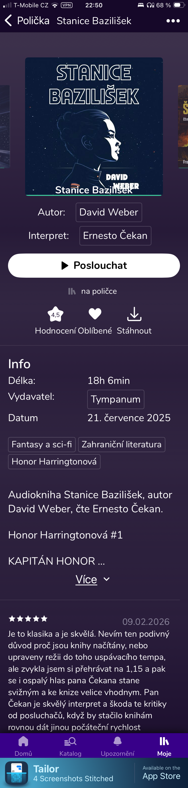
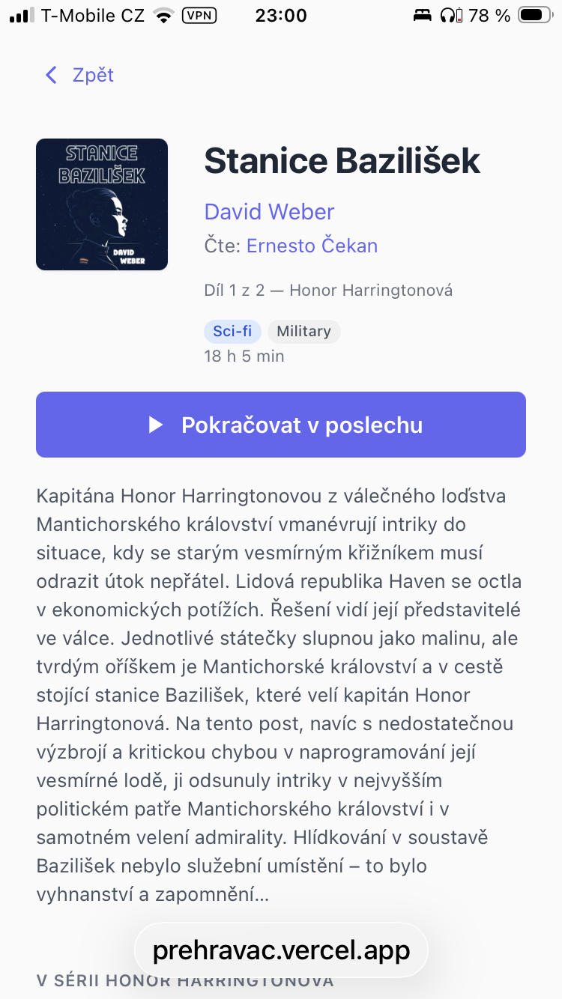
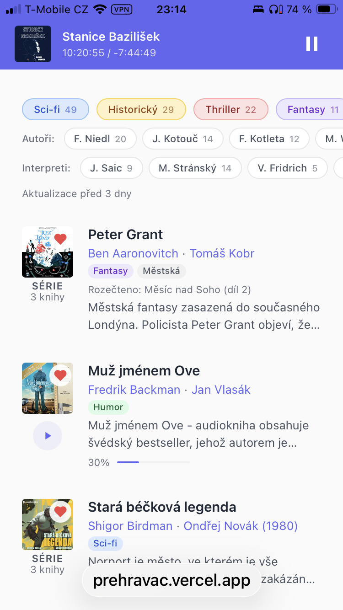
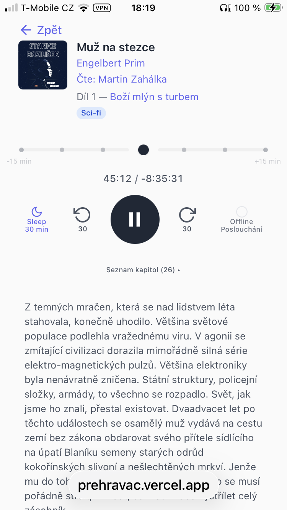
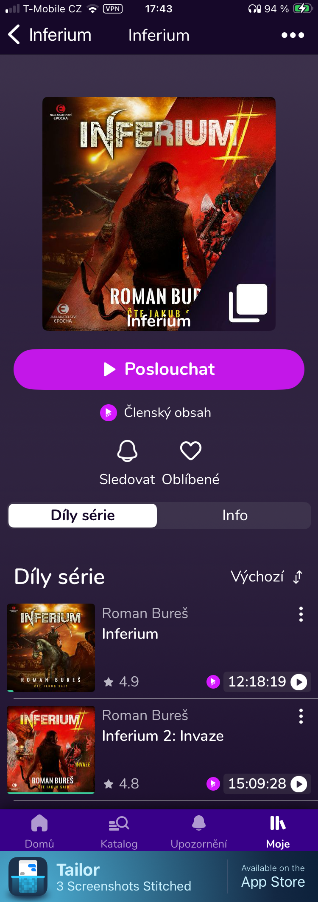
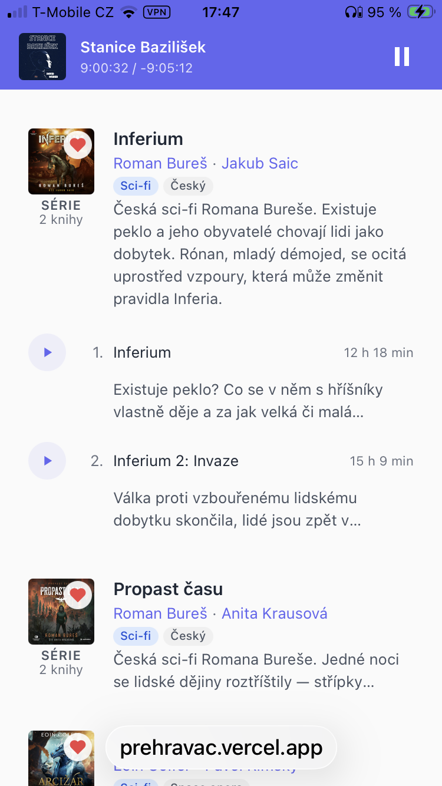

Dvě platformy, ruční stahování, ztracen každé ráno
Mám přístup k tisícovkám knih na Audiotéce. Platím měsíční předplatné a jsem spokojený zákazník — katalog je skvělý, služba funguje. Ale poslouchat chodím ven, střídám Wi-Fi a mobilní data, často v místech se slabým signálem. Přehrávač Audiotéky hledá připojení. Když se nemůže připojit, zasekne se. Knihy si můžete stáhnout pro offline poslech, ale je to někde v nastavení — zapomenete a máte smůlu.
Mám taky asi 50 knih na Audiolibrixu, další české audioknihovně. Jejich appka je horší: klepnete na Play a popup vám řekne, že nic není stažené, jestli chcete nejdřív stáhnout. Tak jsem ji přestal používat — ale ty knihy pořád chci.
To je skutečný důvod, proč jsem si postavil vlastní přehrávač: spolehlivé offline přehrávání a spojení dvou platforem do jedné knihovny. Dokonce i Claude mi řekl, ať do toho nejdu — ať používám existující platformu. Ale ty přehrávače mi nevyhovovaly.
Tak jsem postavil Přehrávač — a je to webový přehrávač, PWA běžící v Safari, ne nativní iOS appka. Funguje líp než nativní appky, které nahrazuje.
Férový pohled
Audiotéka je dobrá
Klikatelné odkazy na autory a interprety, ovládací prvky v dosahu palce, katalog, který denně používají miliony lidí. Ale čeho je moc, toho je příliš.
Audiotéka
Detail knihy: pět obrazovek

Přehrávač
Detail knihy: jedna obrazovka
Abyste na Audiotéce zjistili, o čem jedna kniha je, musíte proscrollovat pět obrazovek: obří obálka fyzické knihy, nadbytečná metadata, sbalený popis s předpřipraveným textem („Audiokniha [název], autor [autor], čte [interpret], režie [režisér]“), a když ho konečně rozbalíte — marketingový text, CAPSLOCK slogany a recenze uživatelů. Skutečný příběh je pohřbený o čtyři obrazovky níž.
Stejná kniha v Přehrávači. Metadata, ovládání přehrávače a čistý popis — vše viditelné bez scrollování.

Knihovna
2 000 knih a jak si vybrat?
Většinu večerů stejná otázka: co budu poslouchat dál? Vím, že mám rád interpreta, jsem naladněný na sci-fi — ale nedá se to kombinovat. Klepnu na interpreta a vidím všechno, co načítal: detektivky, romanci, historii. Žádný způsob, jak říct „jen to sci-fi“. Tak scrolluju plochým seznamem a snařím se vzpomenout, co jsem už slyšel.
Audiotéka
Knihovna: plochý seznam, jednotlivé filtry
Obálka + autor + název + hodnocení. Klepnutím na interpreta filtruji jen podle interpreta — ale nedá se to kombinovat se žánrem nebo sérií. 119 oblíbených, žádné křížové filtrování.
Přehrávač
Knihovna: bohaté karty, kombinované filtry
Žánrové tagy, filtry podle interpreta a autora, které se kombinují. Karty sérií s počtem dílů, popisy viditelné přímo v seznamu. Vyhledávání napříč všemi metadaty.

Přehrávač
Přerušení jsou vždycky „tak deset minut“
Někdo vás zastaví na ulici, myšlenky odběhnou na procházce, na chvíli usnete — když se vrátíte do reality, potřebujete se vrátit i v knížce. Je to vždycky přibližně stejný kus: pět, deset, možná patnáct minut. Tahání posuvníku znamená hádat — nikdy nevíte, kolik času jste právě posunuli. Klepnout na tečku, která je vždycky 5 minut, je úplně jiná věc. Víte přesně, kam se dostanete.
Obálka zabírá 60 % displeje. Surový název kapitoly „19_Muz na stezce 13“. Ovládání dole — správně umístěné pro dosah palce. Ale posuvník se pohybuje v kapitole — a ani nevíte, jak je dlouhá.
Přehrávač
Přehrávač: čas knihy, tečková navigace
Malá obálka + metadata. Uběhnutý a zbývající čas celé knihy. 30minutové okno s 5minutovými tečkami jako klepací cíle. Uspávač a offline jako pilulkové ovládací prvky. Měnit rychlost nepotřebuju — tak tam není.

Série
Většina mých oblíbených jsou série
Honor Harringtonová, Inferium, české sci-fi, ke kterému se pořád vracím — většina toho, co poslouchám, jsou dlouhé série. Chci vědět, kde jsem: Díl 3 ze 7, ne jen název v seznamu. A když objevím novou sérii, chci vědět, o čem je, než se zavážu k 50 hodinám poslechu.
Audiotéka
Série: zvláštní stránka, bez popisu
Série jsou označené v popisech hashtagy. Ale stránka série samotná je jen obří obálka a plochý seznam — žádná čísla dílů, žádný popis toho, o čem série je.

Přehrávač
Série: rozbalovací s popisy
Počet dílů viditelný přímo v knihovně. Klepněte pro rozbalení: každá kniha ukáže 2řádkový popis. AI napsané popisy sérií tam, kde je Audiotéka nemá. Klepněte na název série a uvídíte všechny díly.

Designový poznatek
Než začnete stavět chytré funkce, udělejte základní interakci správně
Přehrávače audioknih přehrávají kapitoly. Takže ukazatel průběhu někdy představuje 8 minut, jindy 3 hodiny. Kapitoly mě nezajímají. Zajímá mě, kolik zbývá z knihy — stejně jako při čtení koukám na stránku, ne na kapitolu.
První řešení bylo zřejmé: ukázat čas celé knihy a přidat tlačítka ±30 minut, aby uživatel mohl přeskočit hranice kapitol. Pak jsem postavil čas na spánek s funkcí přetočení — nastavíte sleep na 30 minut, ráno se probudíte a přehrávač nabídne přetočit přesně těch 30 minut jedním klepnutím. Přišlo mi to jako killer fýčura, protože většinou usnu hned.
Pak jsem předesignoval samotný posuvník. Místo spojitého slajderu jsem postavil 30minutové okno kolem aktuální pozice s tečkami po 5 minutách jako klepací cíle. Chcete se vrátit o 10 minut? Jedno klepnutí na tečku −10. Dopředu o 5? Jedno klepnutí. Tečky jsou dost velké pro ospálý palec o půlnoci.
Stalo se něco nečekaného: notifikace s přetočením po spánku — ta „killer feature“, na kterou jsem byl pyšný — se z nezbytnosti stala volitelnou. Když je základní navigace jedno klepnutí na nejbližší tečku, na vychytávky spoléháte méně.
Spousta „killer features“ existuje jen proto, aby kompenzovala špatné základy. Opravte základy a vychytávky se stanou zbytečnými.
AI vrstva
Popisy, které pomůžou vybrat
Základem projektu je přehrávač — offline přehrávání, které prostě funguje. Ale jakmile to bylo vyřešené, přirozeně se objeví další krok: audioknihy si nevybírám podle obálky. Vybírám je podle toho, o čem jsou a kdo je čte. Popisy v Audiotéce to ztěžují víc, než je třeba.
Tak jsem nechal AI vyrobit udělátko: odstranit předpřipravený text („Audiokniha [název], autor [autor]...“), odebrat CAPSLOCK slogany a bloky creditů, oříznout na skutečný příběh. Typický popis v Audiotéce má 3 000 znaků šumu — pipeline z něj vytáhne děj a omezí na 800. Pak Google Gemini přečte vyčištěný text a vygeneruje žánrové tagy (9 žánrů, 28 podžánrů), detekuje příslušnost k sérii přes 3stupňový systém (regex extrakce, ruční přepisy pro známé výjimky, AI fallback) a píše krátké popisy sérií v češtině.
Z temných mračen, která se nad lidstvem léta stahovala, konečně uhodilo. Většina světové populace podlehla vražednému viru...
Sci-fiPostapoDíl 1 z 5Inferium
2 000 knih, všechny s čistými popisy zaměřenými na příběh, žánrovými a podžánrovými tagy pro filtrování a pozicí v sérii. Ne náhrada dat Audiotéky — vrstva nad nimi, která ze seznamu jmen účastníků zájezdu udělá poutavé čtení.
Neviditelný UX design
Systém řeší chyby, uživatel dělá to, proč přišel
Funkce, které nikdo nevidí, jsou ty nejdůležitější, když nefungují ty internety. Můj standardní přístup je jednoduchý: dokud systém nezkusil vše možné i nemožné, aby chybu odstranil sám, nemá právo obtěžovat uživatele.
Automatické stahování „do foroty“ — na pozadí stahuje dalších ~30 minut kapitol během přehrávání. Žádná tlačítka pro ruční stahování.
Chytré mazání — když se zaplní úložiště, 4stupňový systém nejdřív odstraní přehrané kapitoly jiných knih, aktuální knihu chrání. Žádný ruční úklid.
5stupňové rozlišování URL — IndexedDB cache, in-memory cache, předrozlišené CDN, API proxy, graciézní null. Přehrávač zkusí všechno, než to vzdá.
Automatická obnova — chyby zvuku spustí automatické znovu-rozlišení. Obnovení připojení pokračuje tam, kde jste skončili. Žádná tlačítka pro ruční opakování.
První den jsem si lehl do postele se sluchátky, poslouchal dobrodružství kapitánky Harringtonové, a málem jsem se rozbrečel, když jsem zapnul režim v letadle a ono to pořád hrálo.
Co mi vadilo
Možná maličkosti, ale tisíckrát nic umořilo osla
Žádný signál, žádné přehrávání. Offline vyžaduje ruční stahování před každým výletem — a ruční úklid potom.
Dvě platformy audioknih, dvě appky, žádný způsob, jak je spojit do jedné knihovny.
Usníte při poslechu, ráno se probudíte, nemůžete najít, kde jste byli. Ukazatel ukazuje kapitoly, ne knihu.
Chcete „sci-fi čtené tímhle interpretem“? Nemožné. Filtry se nedají kombinovat.
Popisy knih pohřbené pod předpřipraveným textem, credity a CAPSLOCK marketingovými slogany.
Série existují, ale na kartě není žádné „Díl 3 ze 7“ a žádný popis toho, o čem série je.
Co jsem postavil
Přehrávač pro to, jak skutečně poslouchám
Offline prostě funguje — automatické stahování „do foroty“ během přehrávání, chytré mazání při zaplnění úložiště, automatická obnova při znovu připojení. Nula ručních kroků.
Jedna knihovna — Audiotéka a Audiolibrix spojené. 2 000 knih, jeden přehrávač, jedno vyhledávání.
Čas knihy — uběhnutý a zbývající pro celou knihu. 30minutové okno s tečkovou navigací. Probudíte se, klepnete na nejbližší tečku, posloucháte dál.
Kombinované filtry — klepněte na interpreta, přidejte žánr, hledejte podle názvu. Jména jsou navigace — každé metadatové pole je filtr.
Čisté popisy — 3 000 znaků šumu oříznutých na skutečný příběh. Žánrové tagy od Gemini. Vybírejte podle děje, ne podle marketingu.
Série inline — „Díl 3 ze 7“ na každé kartě, rozbalovací s popisy. AI píše to, co Audiotéka nemá.
Co jsem se naučil
Jsem UX designér, ne vývojář. Postavil jsem to s Claude Code — ale přehrávač nebyl jediný cíl. Než jsem začal, měl jsem plán: vytvořit znovupoužitelný designový skill, který Claude aplikuje na každý projekt automaticky. Jako základ jsem vzal GitLab Pajamas, přidal principy, kterým věřím — odpouštějící software, undo místo potvrzovacích dialogů, inputy dimenzované podle obsahu — a začal stavět. Každý reálný problém skill zpřesnil. „Jména jsou navigace“ vzniklo z oprav knihovny. „Systém řeší chyby, uživatel nedělá nic“ vzniklo z offline přehrávání. Skill vyrostl z obecné šablony na 24KB otestovaných vzorů. Přehrávač audioknih byl skutečný projekt. Designový skill byl plán od začátku.
Nejlepší osobní nástroje vznikají z řešení vlastních frustrací — pokud jste upřímní v tom, kdo je uživatel.